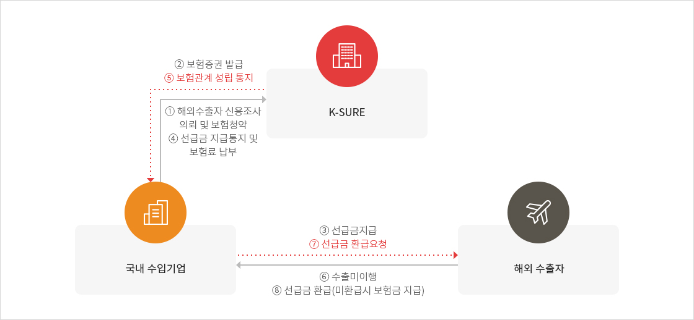

수입보험(수입자용)
제도개요
수입보험(수입자용)은 원유, 가스 등 주요 전략물자의 장기 안정적 확보를 위하여 국내수입기업이 선급금 지급조건 수입거래에서 비상위험 또는 신용위험으로 인해 선급금을 회수할 수 없게 된 경우에 발생하는 손실을 보상하는 제도입니다.상품구조

크게보기
{kind=link}
- 국내 수입기업이 K-SURE에 해외수출자 신용조사 의뢰 후 보험청약을 하면 K-SURE는 국내 수입기업에 보험증권을 발급한다.
- 국내 수입기업은 해외 수출자에게 선급금을 지급하고, K-SURE에 선급금 지급통지 및 보험료를 납부하면 K-SURE는 보험관계 성립을 통지한다.
- 해외 수출자가 수출를 미이행할 경우 국내 수입기업은 해외 수출자에 선급금 환급요청을 하면 해외 수출자는 선급금을 환급하며, 미환급시에는 보험금을 지급한다.
대상거래
아래 물품에 대하여 선급금지급 후 2년 이내에 선적하여야 하는 수입거래 (중계무역 제외)| 구 분 | 상 세 | 비 고 |
|---|---|---|
| 주요자원 |
|
주요자원 상세조회(수입자용) |
| 시설재 | hwp파일 다운로드 pdf파일 다운로드 |
주요자원 상세조회 (수입자용)
일본 수출규제와 관련한 지원대상 품목은 고객센터 또는 담당 영업부서로 문의하여 주시기 바랍니다.
※ 지원대상 품목은 HS Code 앞 4자리 또는 10자리로 조회해주시기 바랍니다.
총 00건
| HS CODE | 품목명 | 품목상세내역 |
|---|---|---|
| 7208 | 철 및 비합금강 관련 자원 및 반제품 | 철 또는 비합금강의 평판압연제품 (폭 600MM 이상, 열간압연한 것) |
| 7214 | 철 및 비합금강 관련 자원 및 반제품 | 철 또는 비합금강의 봉 (단조·열간압연·열간인발·열간압출한 것) |
| 7216 | 철 및 비합금강 관련 자원 및 반제품 | 철강 또는 비합금강의 형강 |
| 7304 | 철 및 비합금강 관련 자원 및 반제품 | 철강제(주철제 제외)의 관과 중공프로파일 (무계목의 것) |
| 7210 | 철 및 비합금강 관련 자원 및 반제품 | 철 또는 비합금강의 평판압연제품 (폭 600MM 이상, 클래드, 도금, 도포한 것) |